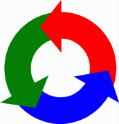

2003-12-17 10:57:14 소프트웨어에 대한 오해 #2 소프트웨어의 오해란 소프트웨어 개발에 관련해서 관리자, 고객, 개발자들이 가지고 있는 잘못된 생각을 말한다.관리자란 개발자들을 관리하는 사람이다.고객은 소프트웨어 개발을 의뢰한 사람이다.개발자는 소프트웨어를 개발하는 사람이다.셋 다 자기 중심적으로 잘못 판단하곤 한다.그 예를 알아보자.다음 글로...